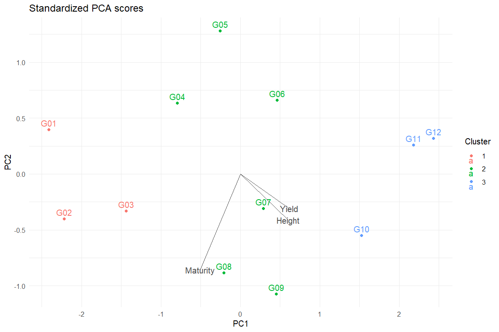
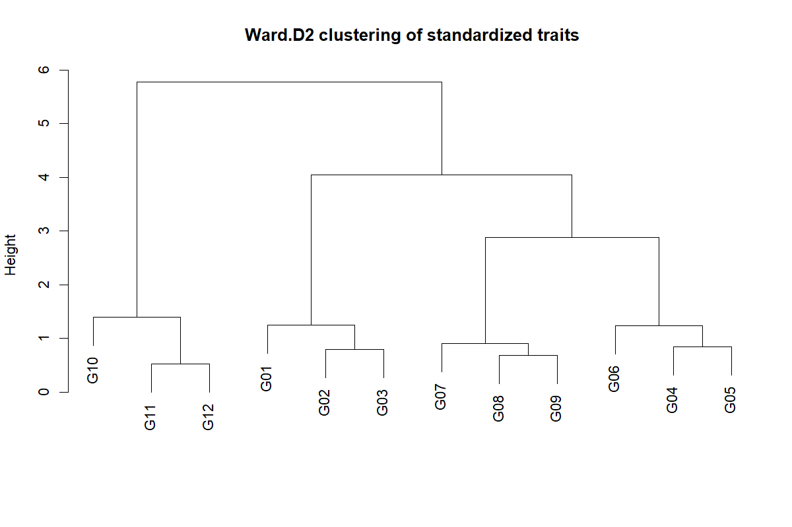

Worked analysis · 1 executable examples
PCA & Diversity Exploration
Explore multivariate relationships on a defined scale
Question and data
Use one row per genotype and at least two varying numeric traits. Traits are centred and divided by their sample SD before PCA and Euclidean Ward.D2 clustering.
Read and report the results
Report eigenvalue percentages, loadings and scores. The biplot overlays unit loading vectors on score coordinates; read numerical loadings for exact contributions. The dendrogram describes the chosen standardized trait distance.
Run the examples
From the repository root, restore the locked dependencies and load the app functions. These are source-checkout examples, not an installed package API.
source("tools/example-cases.R")
load_drdesign()In Shiny, select this module from its workflow heading, upload the example CSV, map the columns, review observations and run. Each R example states the analysis options to reproduce.
pca
Synthetic teaching data; not evidence from a field experiment.
Input
| Genotype | Yield | Height | Maturity |
|---|---|---|---|
| G01 | 21.974 | 49.476 | 100.929 |
| G02 | 22.135 | 52.809 | 102.262 |
| G03 | 23.178 | 55.219 | 101.148 |
| G04 | 24.293 | 53.974 | 98.426 |
| G05 | 24.431 | 54.594 | 96.416 |
| G06 | 25.799 | 58.388 | 96.782 |
| G07 | 26.504 | 59.500 | 99.003 |
| G08 | 26.862 | 58.128 | 100.854 |
Showing up to 8 of 12 observations. The CSV contains every row.
Analysis
data <- research_example("pca-diversity")
result <- run_diversity(data,c("Yield","Height","Maturity"),clusters=3)Computed output
Explained variance 3 rows
| Component | Variance Percent | Cumulative Percent |
|---|---|---|
| PC1 | 81.889 | 81.889 |
| PC2 | 16.399 | 98.287 |
| PC3 | 1.713 | 100.000 |
Scores and clusters 12 rows
| Genotype | PC1 | PC2 | PC3 | Cluster |
|---|---|---|---|---|
| G01 | -2.415 | 0.396 | 0.284 | 1 |
| G02 | -2.219 | -0.400 | -0.144 | 1 |
| G03 | -1.440 | -0.332 | -0.278 | 1 |
| G04 | -0.793 | 0.634 | 0.114 | 2 |
| G05 | -0.255 | 1.281 | -0.001 | 2 |
| G06 | 0.464 | 0.660 | -0.222 | 2 |
| G07 | 0.290 | -0.309 | -0.152 | 2 |
| G08 | -0.210 | -0.883 | 0.196 | 2 |
| G09 | 0.451 | -1.074 | 0.261 | 2 |
| G10 | 1.522 | -0.552 | -0.266 | 3 |
| G11 | 2.177 | 0.260 | -0.123 | 3 |
| G12 | 2.428 | 0.320 | 0.330 | 3 |
Loadings 3 rows
| Trait | PC1 | PC2 | PC3 |
|---|---|---|---|
| Yield | 0.614 | -0.308 | 0.727 |
| Height | 0.603 | -0.411 | -0.684 |
| Maturity | -0.509 | -0.858 | 0.067 |
Clustering merges 11 rows
| X1 | X2 | Height |
|---|---|---|
| -11.000 | -12.000 | 0.521 |
| -8.000 | -9.000 | 0.690 |
| -2.000 | -3.000 | 0.793 |
| -4.000 | -5.000 | 0.849 |
| -7.000 | 2.000 | 0.911 |
| -6.000 | 4.000 | 1.234 |
| -1.000 | 3.000 | 1.248 |
| -10.000 | 1.000 | 1.392 |
| 5.000 | 6.000 | 2.879 |
| 7.000 | 9.000 | 4.048 |
| 8.000 | 10.000 | 5.778 |
Reviewed data 12 rows
| Genotype | Yield | Height | Maturity |
|---|---|---|---|
| G01 | 21.974 | 49.476 | 100.929 |
| G02 | 22.135 | 52.809 | 102.262 |
| G03 | 23.178 | 55.219 | 101.148 |
| G04 | 24.293 | 53.974 | 98.426 |
| G05 | 24.431 | 54.594 | 96.416 |
| G06 | 25.799 | 58.388 | 96.782 |
| G07 | 26.504 | 59.500 | 99.003 |
| G08 | 26.862 | 58.128 | 100.854 |
| G09 | 28.346 | 60.080 | 100.449 |
| G10 | 28.677 | 63.657 | 97.976 |
| G11 | 29.418 | 63.493 | 95.526 |
| G12 | 30.766 | 62.667 | 95.166 |
Software versions 8 rows
| Source / term | Package | Version |
|---|---|---|
| R | 4.5.3 | |
| shiny | shiny | 1.13.0 |
| agricolae | agricolae | 1.3.7 |
| metan | metan | 1.19.0 |
| lme4 | lme4 | 2.0.1 |
| emmeans | emmeans | 2.0.2 |
| SpATS | SpATS | 1.0.20 |
| DiallelAnalysisR | DiallelAnalysisR | 0.6.0 |
Analysis settings 4 rows
| Setting | Value |
|---|---|
| Scaling | Centre and unit standard deviation |
| Distance | Euclidean |
| Linkage | Ward.D2 |
| Clusters | 3 |


Reporting conventions
Tables: estimates and standard errors to 3 decimals; p-values below 0.001 shown as <0.001. Very small or large values use scientific notation. NA means unavailable or not applicable. CSV files retain numerical precision. Confidence levels and multiplicity corrections follow the stated analysis settings; shared letters indicate non-rejection, not equivalence.